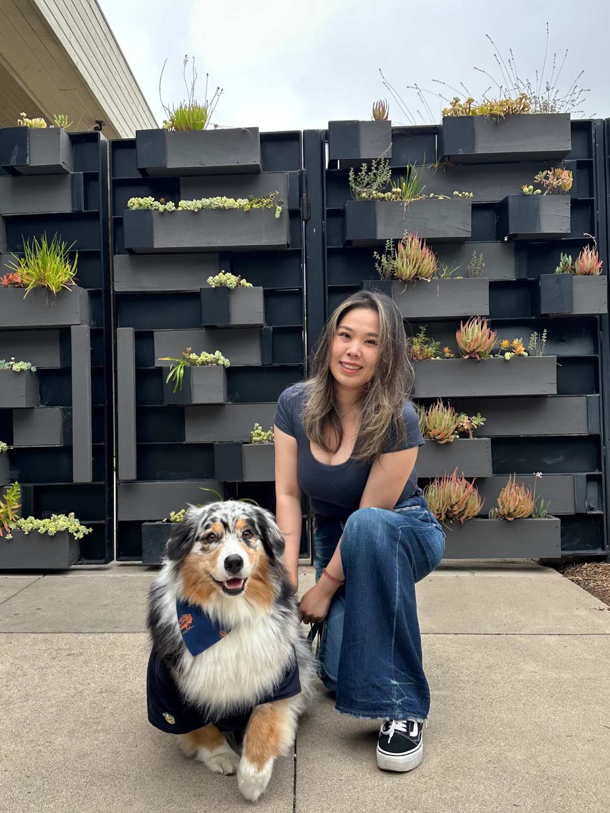
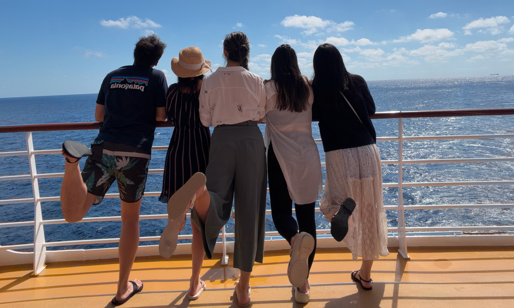
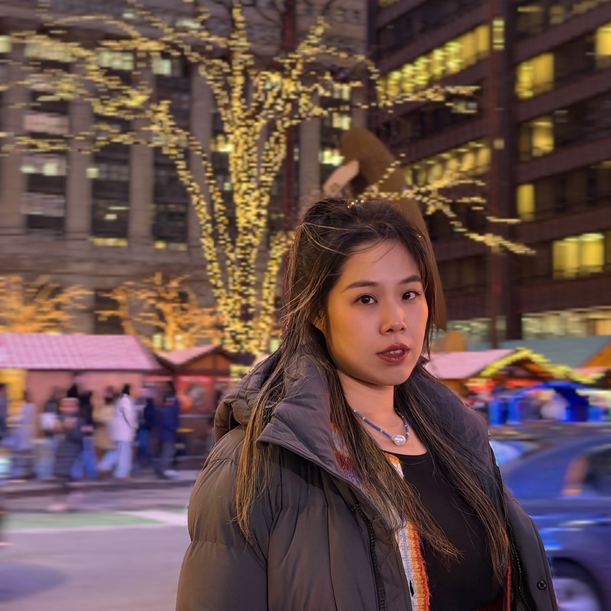
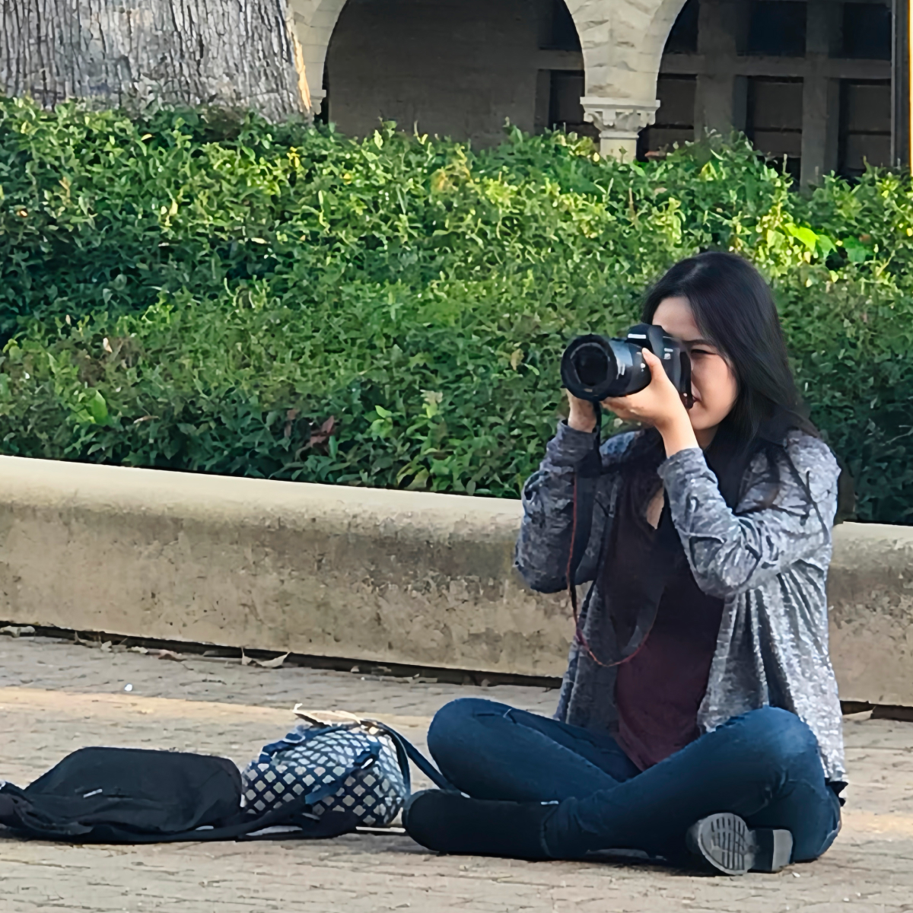
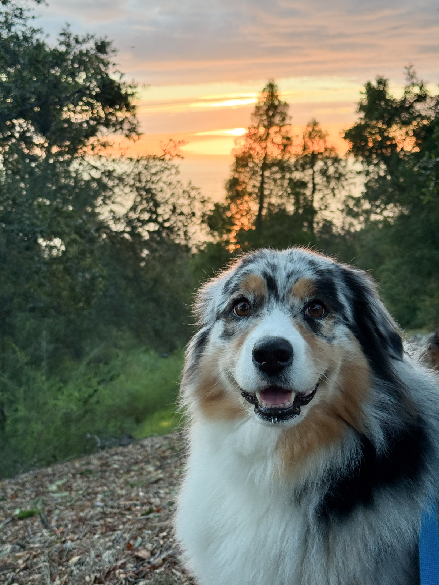
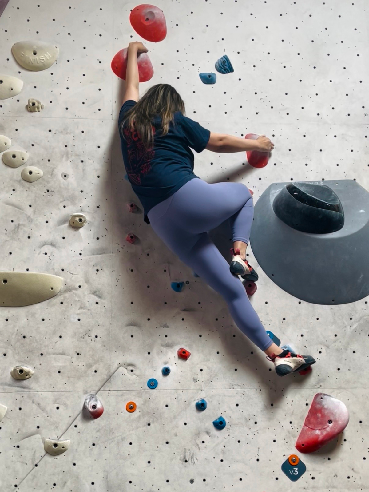
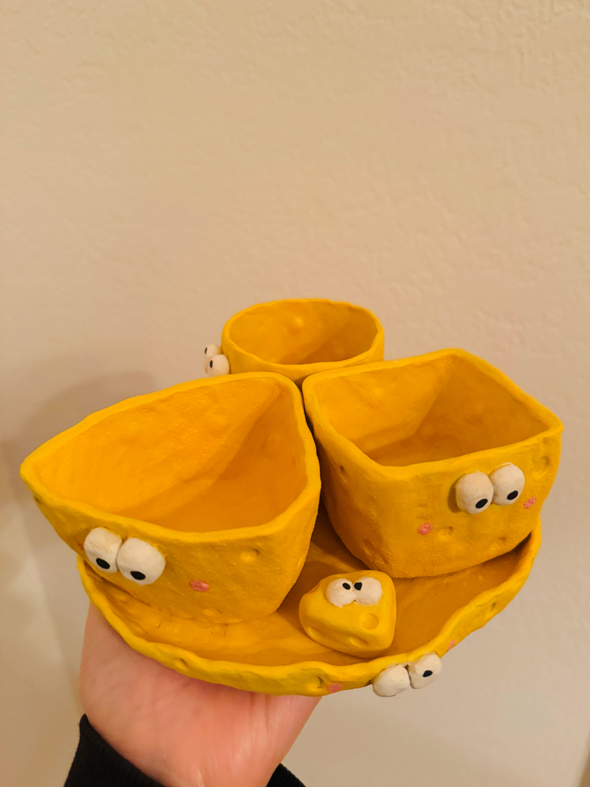
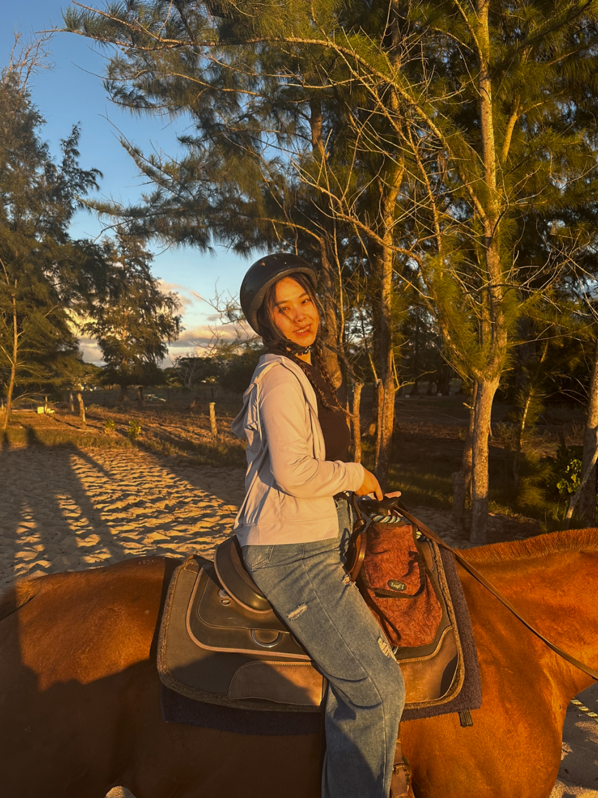
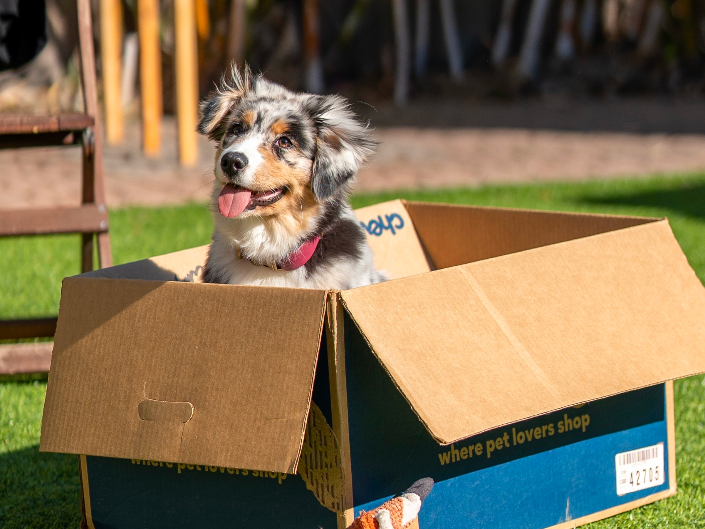

Product designer with 7+ years of experience making complex things feel clear across platforms, services, and workflows used by millions.
With a background in both design and communication, I’m especially drawn to understanding the why behind user behavior and turning that into thoughtful, delightful user experiences.
My work often sits at the intersection of ambiguity and structure: figuring out what matters, simplifying complexity, and designing with both clarity and care.




Before I was a designer, I was a reporter. I spent years asking uncomfortable questions, digging into complicated situations, and trying to make sense of messy information.
That experience still shapes how I work today.
I’m naturally drawn to the “why” behind people’s behavior: what they need, what they avoid, what confuses them, and what helps them move forward. Design became the place where that curiosity met problem-solving.
Different tools, same mindset.




She has never shipped a product, attended a design critique, or filed a Jira ticket. And yet somehow, she's the most universally beloved member of any room she walks into.
Honestly, that feels like a skill.
Yoyo's Resume ↗